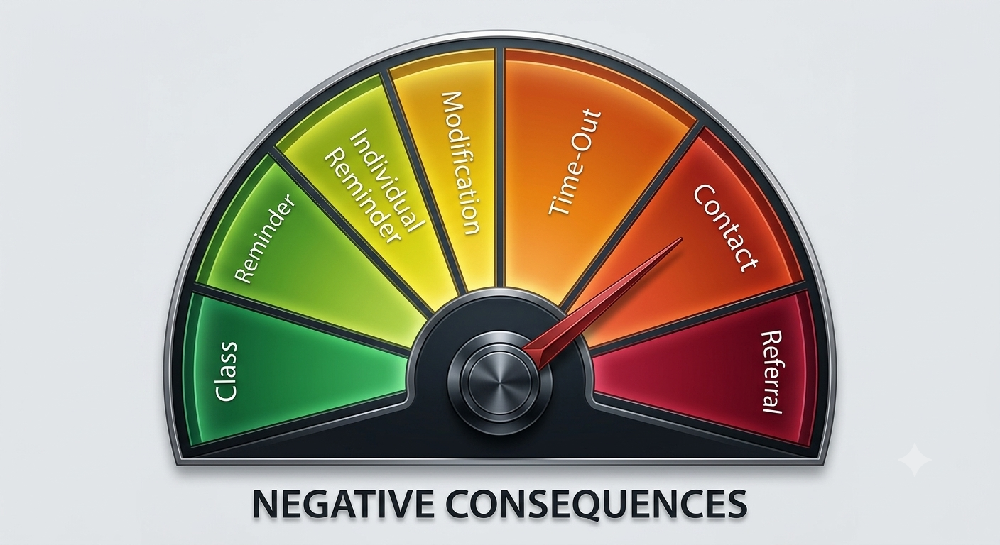

Curated Projects & Instructional Design
Evidence of pedagogical application, curriculum alignment, and technical resource writing designed for modern educational environments.
BYU-Pathway Worldwide Instructional Content
Over several years as a pathway tutor, I developed curated educational summaries and written resources to support student learning modules. View the full compilation of written instructional resources below.
View Resource Folder6th Grade Challenging Behavior Intervention Plan
Designed a comprehensive, multi-step classroom management framework tailored for middle-school learning environments. The core of the strategy balances direct behavioral accountability with immediate pathways for restoration.

Figure 1: The structured behavior intervention cycle used to establish consistent classroom expectations and accountability.
Statistics Tutoring Landing Page
Authored user-focused web copy and resource structural content designed to guide undergraduate students through technical learning pathways, increasing user engagement and resource clarity.